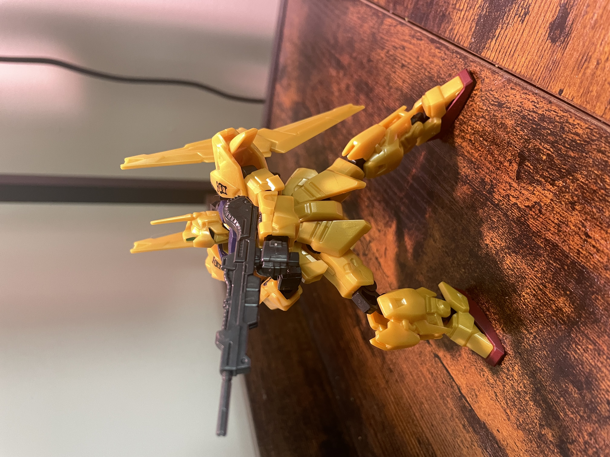
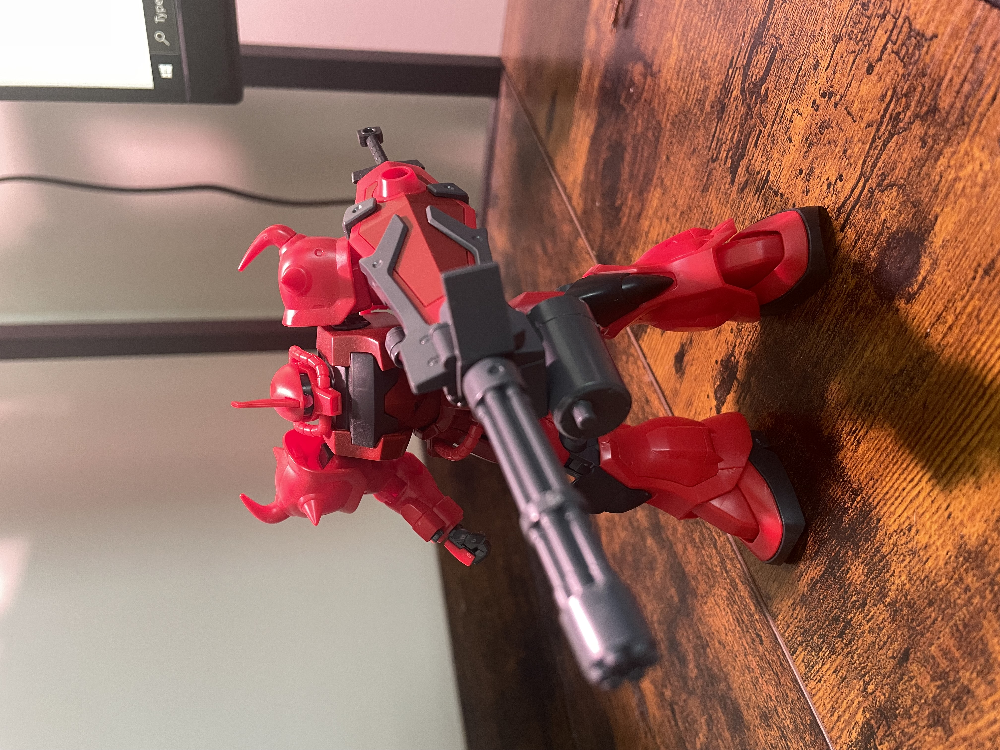
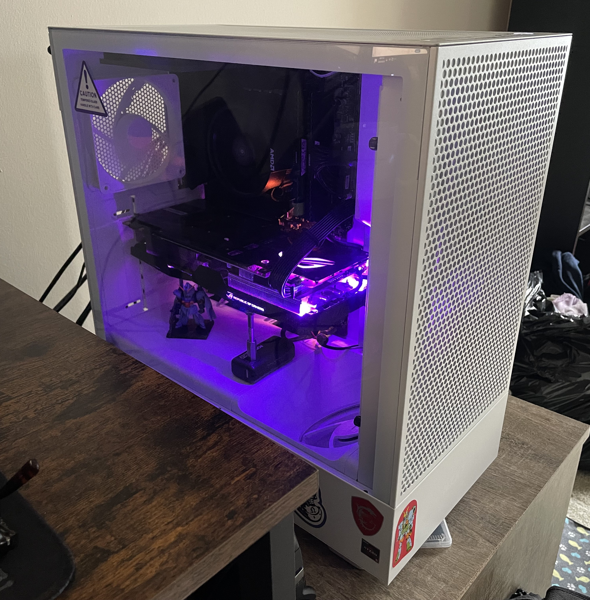

My name is Sadaja Riddick-Johnson, I am 23 years old and I want to be a software engineer!
I am currently in school to get my AAS (associates) in information technology with a concentration in programming
and software development. I have a keen interest in computers and technology in general. I love building and
fixing things.
My hobbies include building plastic models called Gunpla, playing video games, coding, and drawing.
Here's a couple of pictures of some finished Gunpla models i've done. The gold one is from Japan and its not
actually a full fledged model. Its called a G-Frame and all you have to do is snap the armor plates on to a skeleton.
The red one is a real model. There are different grades of difficulty in the Gunpla world. it goes from entry grade,
high grade (HG), real grade (RG), master grade (MG) and perfect grade (PG). They also get more expensive as you go up the
scale. This red one I've built is a HG model. Those are the most popular grades you kind find and they're pretty
beginner friendly.


Everything I do online is mostly done with my self-build computer! I built it a couple years ago and
I've loved it ever since. I had to replace the mother board about a year ago because the other one died. I also
replaced the case it was originally in for the current white one you see in the picture. Its an NXZT case and
its very spacious. The specs are:
- MotherBoard: MSI B550 Gaming Plus
- CPU: Ryzen 5 3600
- GPU: GTX 1070 ti
- RAM: 32GB Corsair 3200mhz
- PSU 500w

My computer
For my gaming interest, I really love multiplayer games and playing with friends and other people. Some of my current obsessions are
HellDivers 2, Splatoon 2, Lethal Company, Content Warning, Fortnite, and Overwatch 2. I also gave a lot of difference consoles. I have
an Xbox Series S and a PS4. My others are my handhelds, I've modded them so they pack quite a punch. My 3ds is my older handheld but it
still has so much to offer. A game I've been into on there is Fantasy Life. Its an open world game where you can choose a life to live, whether its
a wood cutter or a witch, there's over 10 different ones to choose from. My other handheld is my PS Vita. I got it imported from Japan and
it is a severely underrated console. It has so much potential and I really wish it did better in the US.
I really hope one day to get a job in IT. I love everything about it. There is no where else I'd rather be. Even with all this
AI stuff happening, I have to keep pursuing this career because there is nothing else for me. Cheers!